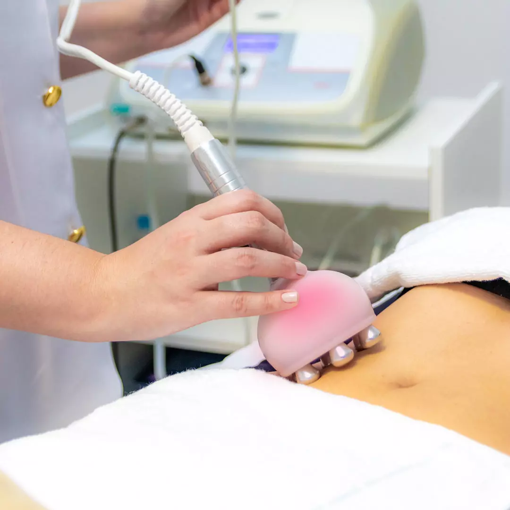
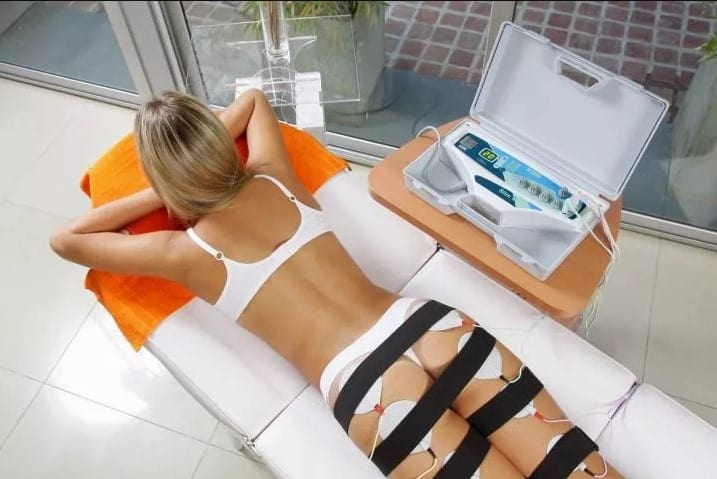
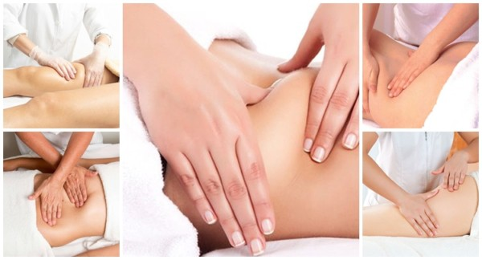
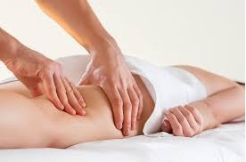

Tratamentos Corporais
Radiofrequência Estética
|  | A radiofrequência é um procedimento estético rápido e indolor indicado para quem deseja ter uma pele mais jovem e uniforme. É um método não invasivo que estimula a renovação e cicatrização epitelial em diferentes partes do corpo. É eficaz para reduzir linhas de expressão, flacidez, estrias e até gordura localizada. |
Corrente Russa
|  | A Corrente Russa é uma técnica que usa corrente elétrica para melhorar o tônus muscular e circulação sanguínea. O estímulo elétrico usado produz uma contração muscular no local em que é aplicado. Esse procedimento é perfeito para combater flacidez, celulite e fortalecer a musculatura. |
Massagem Modeladora
|  | Massagem modeladora é uma técnica da estética corporal em que o objetivo atingir as camadas mais profundas da pele através de movimentos, por isso o nome. Com isso, benefícios como melhora na circulação e no metabolismo, além de ajudar a combater a celulite e auxiliar no processo de eliminação da gordura localizada. |
Drenagem Linfática
|  | A drenagem linfática tem como objetivo aumentar o volume e a velocidade da linfa a ser transportada pelos vasos e ductos linfáticos, por meio de manobras que imitem o bombeamento fisiológico. Ela tem influência direta no aumento da oxigenação dos tecidos, favorece a eliminação de toxinas e metabólitos, aumenta a absorção de nutrientes por meio do trato digestório, aumenta a quantidade de líquidos a ser eliminada e melhora as condições de absorção intestinal, dentre outras funções. |